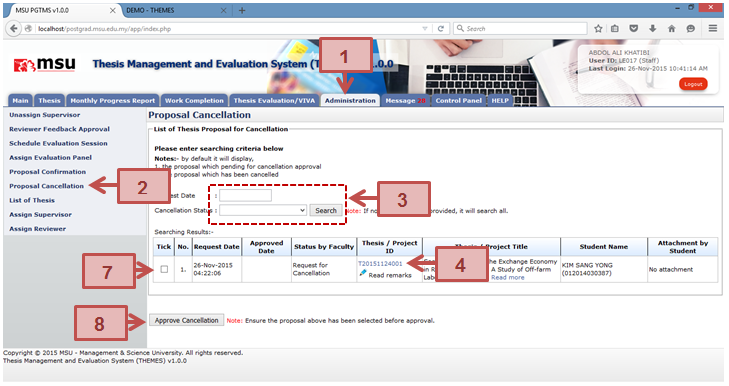
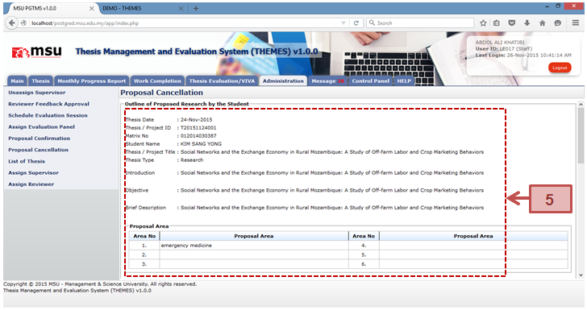
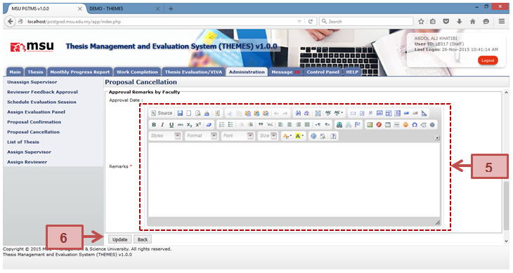

Proposal Cancellation is a feature provided to the Faculty to approve the cancellation request to the submitted proposal by the student. This will enable the student to do the required changes before it can be resubmitted again.



Figure 27: Administration Tab – Proposal Cancellation
Prerequisite
The student has applied the request to cancel the thesis proposal.
Next Action
Student is to resubmit the thesis proposal after the amendment done.
Steps
Next Action
The student is do the thesis proposal amendment and resubmit back to the Faculty.
Warning
System will prompt a notification message if the checkbox is untick before the submission to approve the cancellation request.
Note
None
Created with the Personal Edition of HelpNDoc: Easily create HTML Help documents